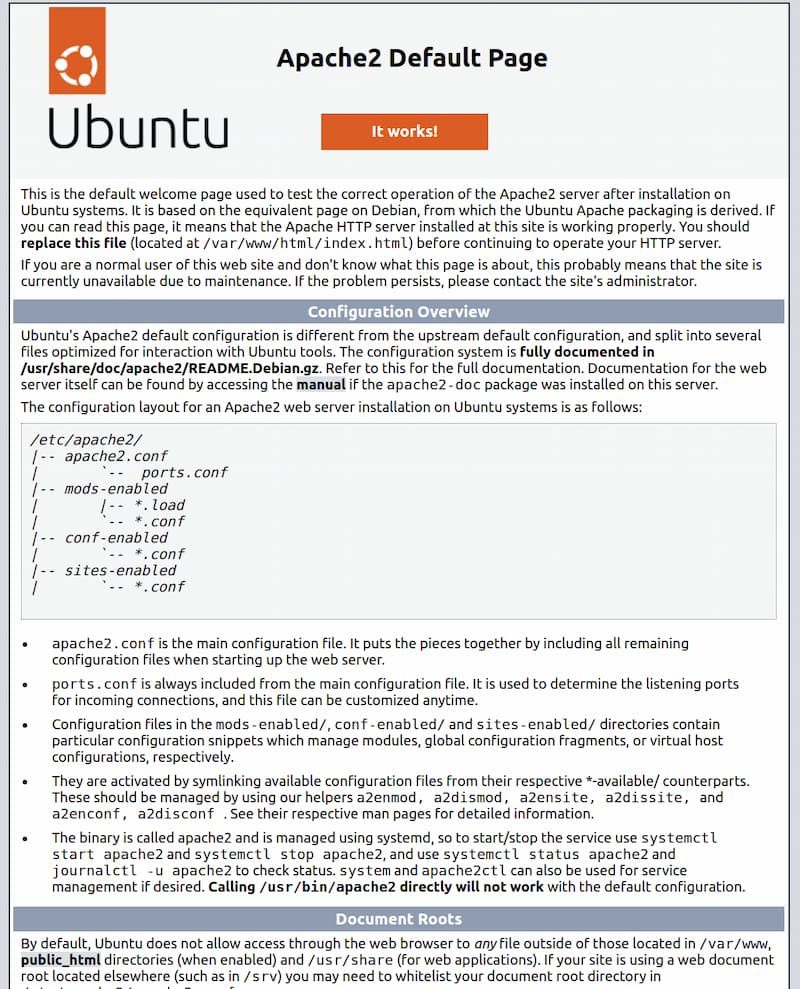

The LAMP stack (Linux, Apache, MySQL, PHP) is a set of open-source tools used to build and deliver dynamic web applications. Linux serves as the operating system, Apache handles web requests, MySQL manages databases, and PHP processes dynamic content.
sudo apt updatesudo apt install apache2sudo systemctl start apache2sudo systemctl enable apache2sudo systemctl status apache2http://localhostThe default Ubuntu Apache web page is there for informational and testing purposes. Below is an example of the Apache default web page for Linux.

MySQL serves as the database backend in the LAMP stack, but you can replace it with MariaDB if needed. Follow the steps below to install the latest MySQL version using the default APT package manager.
Install the MySQL database server package.
sudo apt install mysql-serverEnable the to start automatically at boot time.
sudo systemctl enable mysqlStart the MySQL service.
sudo systemctl start mysqlWhen the installation is finished, it’s recommended that you run a security script that comes pre-installed with MySQL. This script will remove some insecure default settings and lock down access to your database system.
sudo mysql_secure_installationWarning: As of July 2022, an error will occur when you run the mysql_secure_installation script without some further configuration. The reason is that this script will attempt to set a password for the installation’s root MySQL account but, by default on Ubuntu installations, this account is not configured to connect using a password. Prior to July 2022, this script would silently fail after attempting to set the root account password and continue on with the rest of the prompts. However, as of this writing the script will return the following error after you enter and confirm a password:
Output
... Failed! Error: SET PASSWORD has no significance for user 'root'@'localhost' as the authentication method used doesn't store authentication data in the MySQL server. Please consider using ALTER USER instead if you want to change authentication parameters.
New password:This will lead the script into a recursive loop, which you can only exit by closing your terminal window.
Because the mysql_secure_installation script performs a number of other actions that are useful for keeping your MySQL installation secure, it’s still recommended that you run it before you begin using MySQL to manage your data. To avoid entering this recursive loop, though, you’ll need to first adjust how your root MySQL user authenticates.
First, open up the MySQL prompt:
sudo mysqlThen run the following ALTER USER command to change the root user’s authentication method to one that uses a password. The following example changes the authentication method to mysql_native_password:
ALTER USER 'root'@'localhost' IDENTIFIED WITH mysql_native_password BY 'password';After making this change, exit the MySQL prompt:
exitFollowing that, you can run the mysql_secure_installation script without issue.
Start the interactive script by running:
sudo mysql_secure_installationThis will ask if you want to configure the VALIDATE PASSWORD PLUGIN.
Note: Enabling this feature is something of a judgment call. If enabled, passwords which don’t match the specified criteria will be rejected by MySQL with an error. It is safe to leave validation disabled, but you should always use strong, unique passwords for database credentials.
Answer Y for yes, or anything else to continue without enabling.
VALIDATE PASSWORD PLUGIN can be used to test passwords
and improve security. It checks the strength of passwords
and allows users to set only those passwords that are
secure enough. Would you like to set up the VALIDATE PASSWORD plugin?
Press y|Y for Yes, any other key for No:If you answer “yes”, you’ll be asked to select a level of password validation. Keep in mind that if you enter 2 for the strongest level, you will receive errors when attempting to set any password which does not contain numbers, upper and lowercase letters, and special characters:
There are three levels of password validation policy:
LOW Length >= 8
MEDIUM Length >= 8, numeric, mixed case, and special characters
STRONG Length >= 8, numeric, mixed case, special characters and dictionary file
Please enter 0 = LOW, 1 = MEDIUM and 2 = STRONG: 1Regardless of whether you chose to set up the VALIDATE PASSWORD PLUGIN, your server will next ask you to select and confirm a password for the MySQL root user. This is not to be confused with the system root. The database root user is an administrative user with full privileges over the database system. Even though the default authentication method for the MySQL root user doesn’t involve using a password, even when one is set, you should define a strong password here as an additional safety measure.
If you enabled password validation, you’ll be shown the password strength for the root password you just entered and your server will ask if you want to continue with that password. If you are happy with your current password, enter Y for “yes” at the prompt:
Estimated strength of the password: 100
Do you wish to continue with the password provided?(Press y|Y for Yes, any other key for No) : yFor the rest of the questions, press Y and hit the ENTER key at each prompt. This will remove some anonymous users and the test database, disable remote root logins, and load these new rules so that MySQL immediately respects the changes you have made.
When you’re finished, test whether you’re able to log in to the MySQL console by typing:
sudo mysqlThis will connect to the MySQL server as the administrative database user root, which is inferred by the use of sudo when running this command. Below is an example output:
Output
Welcome to the MySQL monitor. Commands end with ; or \g.
Your MySQL connection id is 10
Server version: 8.0.28-0ubuntu4 (Ubuntu)
Copyright (c) 2000, 2022, Oracle and/or its affiliates.
Oracle is a registered trademark of Oracle Corporation and/or its
affiliates. Other names may be trademarks of their respective
owners.
Type 'help;' or '\h' for help. Type '\c' to clear the current input statement.
mysql>To exit the MySQL console, type:
exitNotice that you didn’t need to provide a password to connect as the root user, even though you have defined one when running the mysql_secure_installation script. That is because the default authentication method for the administrative MySQL user is unix_socket instead of password. Even though this might seem like a security concern, it makes the database server more secure because the only users allowed to log in as the root MySQL user are the system users with sudo privileges connecting from the console or through an application running with the same privileges. In practical terms, that means you won’t be able to use the administrative database root user to connect from your PHP application. Setting a password for the root MySQL account works as a safeguard, in case the default authentication method is changed from unix_socket to password.
For increased security, it’s best to have dedicated user accounts with less expansive privileges set up for every database, especially if you plan on having multiple databases hosted on your server.
Note: There are some older versions of PHP that doesn’t support caching_sha2_password, the default authentication method for MySQL 8. For that reason, when creating database users for PHP applications on MySQL 8, you may need to configure your application to use the mysql_native_password plug-in instead. This tutorial will demonstrate how to do that in Step @@.
Your MySQL server is now installed and secured. Next, you’ll install PHP, the final component in the LAMP stack.
You have Apache installed to serve your content and MySQL installed to store and manage your data. PHP is the component of our setup that will process code to display dynamic content to the final user. In addition to the php package, you’ll need php-mysql, a PHP module that allows PHP to communicate with MySQL-based databases. You’ll also need libapache2-mod-php to enable Apache to handle PHP files. Core PHP packages will automatically be installed as dependencies.
To install these packages, run the following commands:
First, you must import the Ondrey Sury Launchpad PPA, which provides the latest PHP packages. To do this, run the following command:
sudo apt install software-properties-common
sudo add-apt-repository ppa:ondrej/phpsudo apt updatesudo apt install php8.3sudo apt install php php-cli php-fpm php-json php-common php-mysql php-zip php-gd php-mbstring php-curl php-xml php-pear php-bcmathphp -vOutput
PHP 8.3.23 (cli) (built: Jul 3 2025 16:11:22) (NTS)
Copyright (c) The PHP Group
Zend Engine v4.3.23, Copyright (c) Zend Technologies
with Zend OPcache v8.3.23, Copyright (c), by Zend Technologies